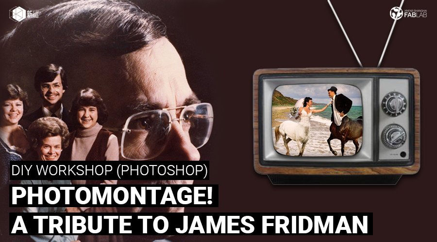
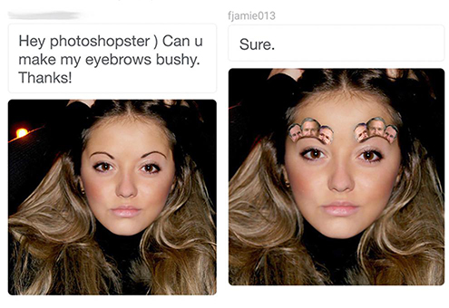
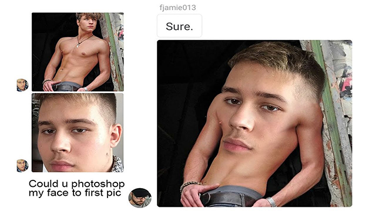
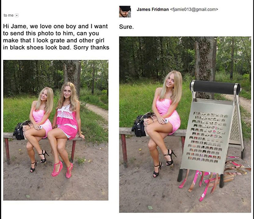

WORKSHOP
DIY WORKSHOP: Photomontage! James Fridman Tribute (Photoshop) | 蒙太奇！詹姆斯·弗里德曼致敬(Photoshop)

When:Saturday, January 13, from 1:30pm to 4:30pm
Where: Xinfab - Kangding East Rd, Lane 45, Building no.5, Room 102, Jing'an District
Price: Price: 200 RMB (Wechat 210 RMB)
Do you know James Fridman?
He makes us laugh quite a lot with his photoshop skills, so we thought it'd be fun to pay him a little tribute by teaching you how to make your own photomontages!
In this workshop, we're going to walk you through how to transform photos into funnier photos with Adobe Photoshop. We will combine your chosen photo with another photo(s) that the teacher* will provide. Although this is a funny workshop, we take our teaching seriously. You'll learn the best basic tools in Photoshop to make your own funny photomontage.
Adobe Photoshop is a must-have software for any graphic designer or meme-maker. It is litteraly what makes celebrities look so perfect on the cover of magazines.
Cannot afford plastic surgery? Well, with Photohsop you can look great - at least in pictures!
*The teacher will provide some material (photo files) during the lesson so that students can follow using the same examples. Nonetheless, we invite students to bring a photo(s) they would like to use and try to use them during the lesson.
**Requirements: No previous knowledge is needed, but you do need to be familiar with how to use a computer.
Things you should bring:
// Your laptop, charger and mouse
// Install Photoshop in your laptop before you come (Trial version download here:http://www.adobe.com/products/photoshop/free-trial-download.html)
// Your passion, curiosity, and questions




WORKSHOP SCHEDULE
// STEP 1: Introduction to Photoshop
_Overview of the software
_Basic tools and commands
// STEP 2: Make your own montage
_Choose your photos
_Learn how to delete/change background, etc
_Learn effects to make your montage look realistic
///////////////////////////////////
HOW TO SIGN UP
SIGN UP DEADLINE: JANUARY 12
// ALIPAY (200 RMB)
Transfer the workshop fee to pay@xinfab.com (please indicate your phone number on the payment details so we can contact you!)
// CASH (200 RMB)
Come by our lab during our opening hours to book your spot.
// WECHAT (210 RMB - Wechat charges a fee)
Enter our shop from your phone via this link and proceed to payment with Wechat Wallet
Questions? Send us an email to info@xinfab.com.
///////////////////////////////////
ABOUT THE TEACHER

Pamela Martello is a Mexican jewelry designer who has been creating original and stylish 3D and 2D designs for the past 9 years. Jewelry is Pamela's true love, but she has a decade-long love affair with graphic design and Illustrator, with which she complements her jewelry creations.
Pamela is a graduate from the European Institute of Design (IED) in Rome, Italy. She entered the IED through the big door, by winning a design competition and being awarded a scholarship. Upon graduating in jewelry design, Pamela took a graphic design specialization, also at the IED. In her career, Pamela has won multiple jewelry and graphic design awards, including an artwork design award for American Express. Pamela has been creating jewelry in Shanghai for the past 4 years.
Last year, Pamela discovered Xinfab and immediately joined our core team as a volunteer. She loves the laser and the 3D printers and is always experimenting in other fields related to design, where she finds inspiration for her creations. She has also taught many workshops with us. For Pamela, travelling, exploring, and living in different places offers a constant stream of stimulus for new ideas (plus a little fantasy too).
时间：1月13日星期六从下午1：30到4：30
地点： 新Fab- 静安区康定东路45弄5号102室
价格： 200元（微信210元）
你知道詹姆斯·弗里德曼吗？
他的Photoshop技巧使我们笑了很多，所以我们认为通过教你如何制作自己的照片蒙蒙，给他一点敬意是很有趣的！
在本次研讨会中，我们将带您了解如何使用Adobe Photoshop将照片转换成更有趣的照片。我们会将您选择的照片与老师*提供的另一张照片合并在一起。虽然这是一个好玩的车间，但我们认真对待教学。你将在Photoshop中学习最好的基本工具来制作自己有趣的照片。
Adobe Photoshop是任何平面设计师或模特制作人必备的软件。Photoshop就是在杂志的封面上名人看起来如此完美的原因。
买不起整容手术？那么，与Photohsop你可以看起来不错，至少在照片！
*老师在课上会提供一些素材（照片文件），以便他们可以用同样的例子跟进她，这样他们就可以更容易理解，但是我们邀请学生带一张他们想要的照片在课程中使用并尝试使用它们。
要求：以前不需要知识，但是您需要熟悉如何使用计算机。
你应该带的东西：
// 笔记本和充电器
// 鼠标（推荐）
// 你来之前在你的笔记本电脑上安装Photoshop！ （这里免费下载：http://www.adobe.com/products/photoshop/free-trial-download.html）
// 你的激情，好奇心和问题
///////////////////////////////////
如何注册
注册截止日期：1月5日（星期五）
// 支付宝（200 RMB）
将研讨会费用转至 pay@xinfab.com（请在付款明细上注明您的电话号码，以便我们与您联系！）
// 现金（200 RMB)
由我们的实验室在我们的开放时间来预订你的位置。
// 微信（210 RMB - 微信收费）
有问题吗？ 发邮件到info@xinfab.com.
///////////////////////////////////
关于教师们
Pamela Martello是墨西哥珠宝设计师，在过去的9年里一直在创造原创和时尚的3D和2D设计。珠宝是帕梅拉真正的爱情，但她与平面设计有十年的恋情，她补充了她的珠宝作品。
Pamela毕业于意大利罗马的欧洲设计研究院（IED）。她通过大门进入IED，赢得设计比赛并获得奖学金。在珠宝设计毕业后，Pamela在IED上也进行了平面设计专业。在她的职业生涯中，帕梅拉赢得了多个珠宝和平面设计奖，包括美国运通艺术品设计奖。帕梅拉在过去的四年里一直在上海创造珠宝。
去年，帕梅拉发新fab，立即加入我们的核心团队当志愿者。她喜欢激光和3D打印机，并且一直在与设计有关的其他领域进行试验，从中找到灵感。她还和我们一起教了许多讲习班。对于帕梅拉来说，旅行，探索和生活在不同的地方为新的想法提供了不断的刺激（加上一点点幻想）。